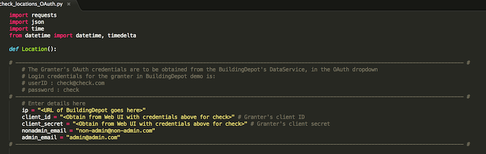

Quickstart
Here you are at the Quick start panel. This page shows you how to get the Dynamic Access Control Demo working right out of the box, with fewest possible steps.
Things you need:
- Two android smart phones with API 20 or higher
- A BLE Beacon
First Step:
- Install BuildingDepot along with the pre-configured image of BuildingDepot demo database, which holds all the demo buildings and tags, that are essential for this demo to work
- Place a BLE beacon in your sensor deployed Location
Configuring the Permission Granter:
The Permission granter script is the python script by name "check_locations_OAuth.py". This file can be found in the Github repo :
https://github.com/IoT-Expedition/Giotto-Dynamic-Access-Control
Download this file onto the server hosting Building Depot. Edit the below field:
- ip - Give the URL on wich you have BuildingDepot installed (Please also specify the PORT of dataservice)

Final Steps:
Do this only after you have completed all the above steps !!!
- Run the newly configured "check_locations_OAuth.py" in the terminal
- Using the GIOTTO app:
- Install and open the application on both the phones
- On one phone, enter the user name as admin@admin.com. Leave the password field unchanged. Click Settings button.
- BD URL - Enter the URL on which you have installed Building Depot
- BD PORT - Enter the PORT of the BuildingDepot's Dataservice. Default is 82
- OAuth Client Credentials obtain the credentials from the Web UI of Building Depot. Use the login credentials username : admin@admin.com and password : admin
- On the other phone, enter the user name as non-admin@non-admin.com. Leave the password field unchanged. Click Settings button.
- BD URL - Enter the URL on which you have installed Building Depot
- BD PORT - Enter the PORT of the BuildingDepot's Dataservice. Default is 82
- OAuth Client Credentials - obtain the credentials from the Web UI of Building Depot. Use the login credentials username : non-admin@non-admin.com and password : non-admin
- Test case:
- Login on the NON-ADMIN phone. Select Location "Google" from the dropdown menu. It displays "Not Authenticated to view this List", since ADMIN is not in Location "Google"
- Now, Login on the ADMIN phone and select Location "Google". The ADMIN would be able to view a list of sensors in this Location
- Once admin has selected Location "Google", refresh the NON-ADMIN's GIOTTO app with the refresh button on the top right corner of screen. The page gets updated with a list of sensors that the ADMIN has granted access for the NON-ADMIN to view.
- Select Location "Random" on ADMIN's phone and refresh the NON-ADMIN's phone. The list disappears and shows "Not Authenticated to view this List", since ADMIN is no longer in that location
- Using the BLE_GOOGLE_TESE app:
- Install and open the application on both the phones
- On one phone, enter the user name as admin@admin.com. Leave the password field unchanged. Click Settings button.
- BD URL - Enter the URL on which you have installed Building Depot
- BD PORT - Enter the PORT of the BuildingDepot's Dataservice. Default is 82
- OAuth Client Credentials - obtain the credentials from the Web UI of Building Depot. Use the login credentials username : admin@admin.com and password : admin
- BEACON MAC - Enter the MAC ID of your Beacon
- On the other phone, enter the user name as non-admin@non-admin.com. Leave the password field unchanged. Click Settings button.
- BD URL - Enter the URL on which you have installed Building Depot
- BD PORT - Enter the PORT of the BuildingDepot's Dataservice. Default is 82
- OAuth Client Credentials obtain the credentials from the Web UI of Building Depot. Use the login credentials username : non-admin@non-admin.com and password : non-admin
- BEACON MAC - Enter the MAC ID of your Beacon
- Test case:
- When ADMIN is not near the beacon's range, the list on NON-ADMIN's app shows "Not Authenticated to view this List"
- Now, bring the ADMIN closer to the beacon. ADMIN will be able to view the sensors in his location
- Refresh the NON-ADMIN's app with the refresh button on the top right corner of the page and would be able to view the list of sensors in that beacon Location
- Remove the ADMIN away from the beacon and again refresh the NON-ADMIN's app. This time, it returns "Not Authenticated to view this List"
HAPPY WORKING !!!
Back to Main Page